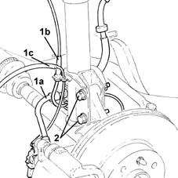
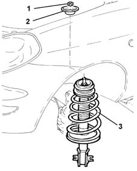
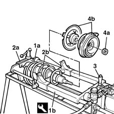
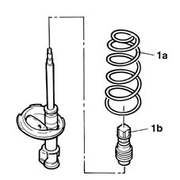
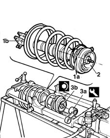
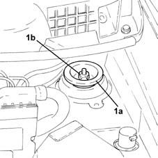
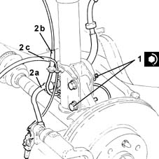

4410A12 front suspension damper (one), lh or rh - for mcpherson strut system - includes dismantling/re-building of assembly at bench r r
- Path
- Procedures > 44 SUSPENSION AND WHEELS > 4410 FRONT SUSPENSION > 4410A front dampers and springs > 4410A12 front suspension damper (one), lh or rh - for mcpherson strut system - includes dismantling/re-building of assembly at bench r r
- Kind
- repair procedure (removal / refitting; the operation number is the code)
- Applies to
- all engines; all production periods
- Interactive page
- https://sloeber94.github.io/elrnDB-lYpsln/en/#/2429230
Applies to: all engines; all production periods
 Removing
Removing
 Refitting
RefittingPosition the vehicle on the ramp.
FOR THE LEFT SHOCK ABSORBER
Proceed with removal 4450B02 left front wheel r r .
FOR THE RIGHT SHOCK ABSORBER
Proceed with removal 4450B04 right front wheel r r .
1. Release the front brake caliper flexible pipe (1a), the electrical wiring for the front wheel rpm sensor (1b) and the electrical wiring for the brake pad wear sensor (1c) from the fastenings on the shock absorber.
2. Undo the bolts fixing the steering knuckle to the shock absorber.

Applies to: all engines; all production periods
1. Stop the rotation of the stem and loosen the nut fixing the shock absorber to the bodyshell.
2. Remove the shock absorber upper mounting.
3. Remove the front suspension shock absorber.

Applies to: all engines; all production periods
1. Position the front suspension shock absorber (1a) on the tool (1b).
 | Name | Country |
|---|---|---|
1b | Support | 1.874.555.000 |
2. Secure shock absorber with strut retaining device (2a) and spring compression brackets (2b)
3. Operate the lever on the compressed air blower and compress the shock absorber spring.
4. Undo the nut (4a) and remove the shock absorber end of travel mounting and flange (4b).

Applies to: all engines; all production periods
Operate on the lever on the device to turn off the air supply. Wait until the spring releases and remove the front suspension from the device.
1. Release the spring (1a) and the boot (1b) from the shock absorber.

Applies to: all engines; all production periods
Refitting
Removing.
Place the boot and the spring in their housings on the front shock absorber.
Position the shock absorber assembly on the pneumatic tool.
| Name | Country |
|---|---|---|
- | Support | 1.874.555.000 |
Position the spring onto the relevant end section
Secure the shock absorber with the strut block retaining device and with the appropriate brackets for compressing the spring.
1. Place the flange in its housing positioning the grooves (1a) in line with the area (1b) where the shock absorber is attached to the steering knuckle.
2. Place the rubber buffer, complete with bearing, back in its housing.
Operate the lever on the device to close the pressurised air blower then wait until the spring is completely released.
3. Using the tool (3a), tighten the nut (3b) fixing the shock absorber end of travel mounting to the recommended torque.
Calculation of tightening torque if tool (3a) is used: multiply the length of the torque wrench, expressed in metres, by the value of the nominal tightening torque, expressed in daNm; the figure produced by this method should be divided by the sum of the length of the torque wrench, expressed in metres and the length of the tool, expressed in metres.
Example: using a torque wrench 0.4 metres long and a spanner 0.06 metres long to carry out the tightening to a nominal torque of 6 daNm produces an actual calibrationj of 5.2 daNm.
| Name | Country |
|---|---|---|
3a | Spanner | 1.870.754.000 |
 | Fastening | Component | Ø | Value (daNm) |
|---|---|---|---|---|
3b | Nut | FRONT DAMPER | M12 | (Upper mounting side) 3.6 ÷ 5.4 |

Applies to: all engines; all production periods
Remove the front shock absorber from the pneumatic tool for compressing springs.
Place the shock absorber in position.
1. Place the shock absorber upper mounting (1a) back in its housign and secure it without tightening the nut (1b).

Applies to: all engines; all production periods
1. Tighten the bolts fixing the steering knuckle to the front shock absorber to the recommended torque.
| Fastening | Component | Ø | Value (daNm) |
|---|---|---|---|---|
1 | Bolt | FRONT HUB STEERING KNUCKLE. | M10 | (Shock absorber side) 6.2 ÷ 6.8 |
2. Fasten the front brake caliper flexible pipe (2a), the electrical wiring for the front wheel rpm sensor (2b) and the electrical wiring for the brake pad wear sensor (2c) to the fastenings on the shock absorber.

Applies to: all engines; all production periods
FOR THE RIGHT SHOCK ABSORBER
Proceed with refitting 4450B04 right front wheel r r .
FOR THE LEFT SHOCK ABSORBER
Proceed with refitting 4450B02 left front wheel r r .
Lower the vehicle on the lift until the wheels are resting on the ground.
Tighten the nut fixing the shock absorber upper mounting to the recommended torque.
| Fastening | Component | Ø | Value (daNm) |
|---|---|---|---|---|
- | Nut | FRONT DAMPER | M12 | (Upper mounting side) 5.6 ÷ 6.2 |
Remove the car from the ramps.